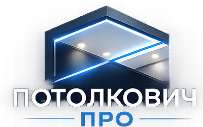

Натяжные потолки в Вологде
Бесплатный замер • Гарантия 15 лет • Монтаж за 1 день
✓ Бесплатный выезд
✓ Работа без пыли
✓ Более 1000 объектов

Бесплатный замер • Гарантия 15 лет • Монтаж за 1 день
Классическое решение для квартиры, дома или офиса.
Визуально увеличивают пространство и отражают свет.
Премиальное решение без нагрева помещения.
Современный дизайн и зонирование пространства.
Элегантная фактура с мягким отражением света.
Необычные дизайнерские решения для интерьера.
Эффект светящегося потолка по всей площади.
Имитация натуральных материалов и эксклюзивных покрытий.
Сочетание нескольких фактур и цветов.
Используем проверенные материалы и комплектующие.
Выезжаем по Вологде и области без оплаты.
Большинство объектов сдаём в день установки.
Работаем профессиональным инструментом с пылеудалением.
Приезжаем на объект, делаем замеры и консультацию.
Подготавливаем полотно и комплектующие под ваш проект.
Быстрая и аккуратная установка с гарантией качества.


Матовые потолки выглядят как классический окрашенный потолок. Сатиновые имеют мягкий благородный блеск. Глянцевые отражают свет и визуально увеличивают помещение.
Мы рекомендуем выполнять монтаж после поклейки обоев и завершения отделочных работ, но до установки мебели.
Мы используем надежный алюминиевый профиль и гарпунную систему монтажа, которая обеспечивает долговечность и возможность демонтажа без повреждения полотна.
Натяжной потолок способен удерживать большое количество воды. Наши специалисты аккуратно сольют воду и восстановят первоначальный вид потолка.
Обычно достаточно обеспечить доступ к стенам по периметру помещения. Мы используем инструмент с пылеудалением и работаем максимально аккуратно.
Да. Наши монтажники имеют большой опыт установки натяжных потолков на стены из гипсокартона.
Комната площадью около 20 м² обычно устанавливается за 2–3 часа. Квартира без сложных конструкций — за один день.
Минимальное опускание составляет около 3 см. При установке встроенных светильников обычно требуется 6–7 см.
Качественные полотна имеют минимальный запах, который полностью исчезает через несколько часов.
Да. Для холодных помещений рекомендуем тканевые потолки, которые не боятся низких температур.
Работаем ежедневно по Вологде и Вологодской области